Transformaciones lineales rígidas
Transformaciones lineales rígidas
 Transformaciones lineales rígidas
Transformaciones lineales rígidas
La Geometría Euclidiana estudia las propiedades de figuras que permanecen invariantes bajo transformaciones rígidas. Las transformaciones pueden ser de varios tipos y algunos de ellos pueden identificarse con objetos geométricos conocidos.
El objetivo de esta unidad es identificar la relación entre la Geometría analítica y el Álgebra lineal a través de la representación matricial de una transformación lineal.
Corresponde al tema 2.2.2: Geometría de las transformaciones lineales, de la Unidad 2: Transformaciones lineales, del curso Álgebra lineal II, por lo que responde a la competencia específica: "Utilizar las propiedades de la transformación lineal para resolver problemas matemáticos mediante representación matricial", con un nivel taxonómico de análisis (3). También corresponde a la Unidad 4: Transformación de coordenadas, del curso Geometría analítica II, cuya competencia específica es: "Simplificar ecuaciones de curvas para resolver situaciones de contextos variados mediante las técnicas de rotación y traslación de ejes con en ecuaciones generales de transformación", con un nivel taxonómico de utilización (4).
La animación computacional frecuentemente trata con modelar objetos a gran escala y con detales que incluso atañen a problemas de la física típicamente tratados en la modelación por computadora. Mucho de éste trabajo implica determinar mejores algoritmos para, de manera inteligente, aproximar la escala sin sacrificar detalles.
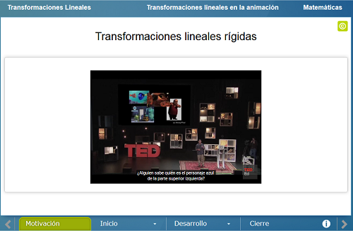
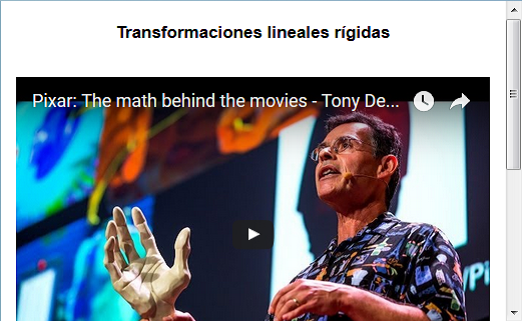
Se enunciarán las transformaciones lineales básicas en su forma matricial: Rotación, proyección, reflexión y homotecia. Poniendo especial énfasis en el cálculo de la matriz asociada a la transformación lineal correspondiente.
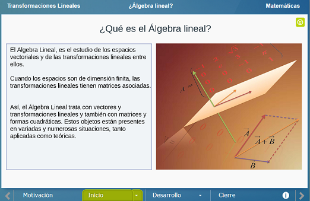
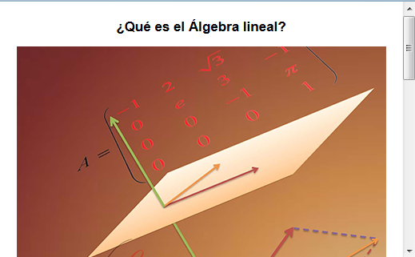
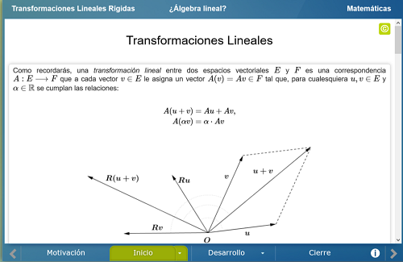
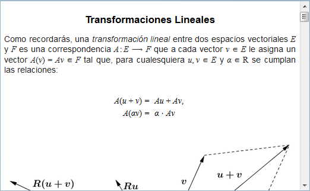
Se presenta una escena en la que se muestran los ejemplos básicos de transformaciones lineales y su efecto geométrico en una selección de figuras geométricas. Así mismo se podrá visualizar de manera analítica al aplicar la matriz de la transformación a la base de la conjunto de puntos en cuestión.
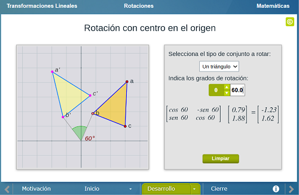
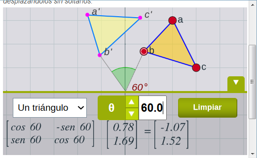
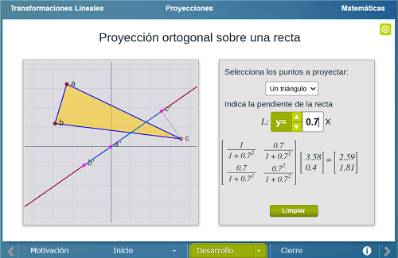
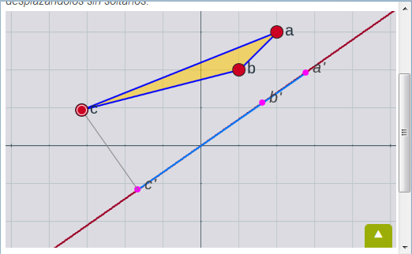
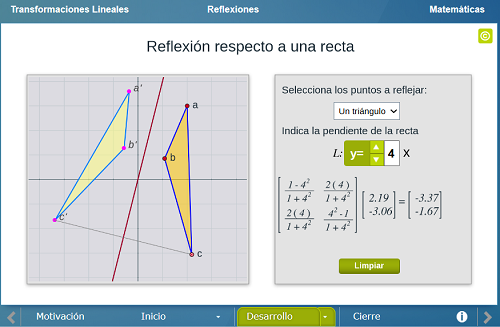
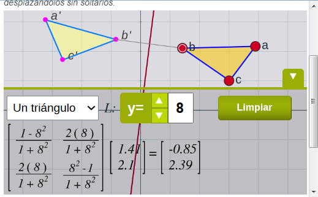
A modo de conclusión, las ideas de cierre escencialmente subrayan el hecho importante del cálculo de las matrices asociadas a las transformaciones lineales estudiadas y su efecto en la representación geométrica.
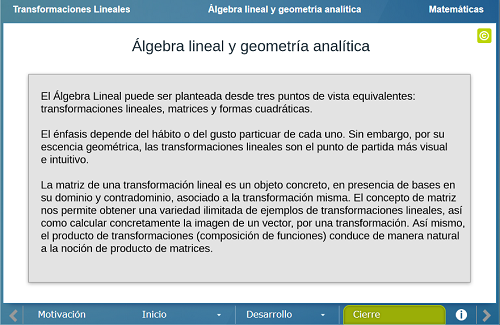
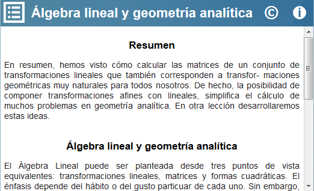
| Diseño del contenido | Julio Arnoldo Prado Saavedra |
| Diseño funcional | Julio Arnoldo Prado Saavedra |
| Programación | Julio Arnoldo Prado Saavedra |
| Diseño gráfico | Ricardo López Gómez |
| Coordinación | Leticia Montserrat Vargas Rocha |
| Diseño funcional | Victor Manuel Amezcua y Raz |
| Programación | Victor Manuel Amezcua y Raz |
| Asesoría de programación | Víctor Hugo García Jarillo (LITE) |
| Diseño gráfico | Francisco Varela Fuentes |
| Coordinación | Leticia Montserrat Vargas Rocha |
| Desarrollo del contenedor | Oscar Escamilla González |
Los contenidos de esta unidad didáctica interactiva están bajo una licencia Creative Commons Reconocimiento-NoComercial-CompartirIgual.
La unidad didáctica fue creada con Arquímedes, una herramienta de código abierto.
La unidad didáctica contiene escenas elaboradas con Descartes, una herramienta de código abierto.
LITE - UnADM 2014